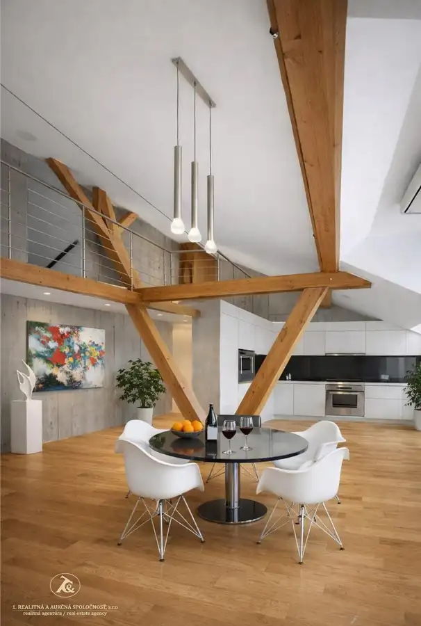
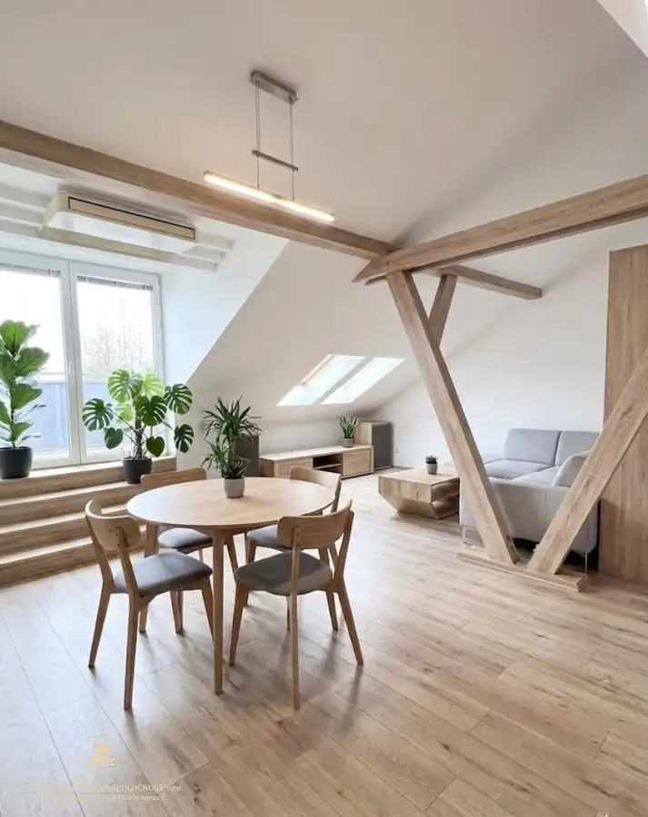
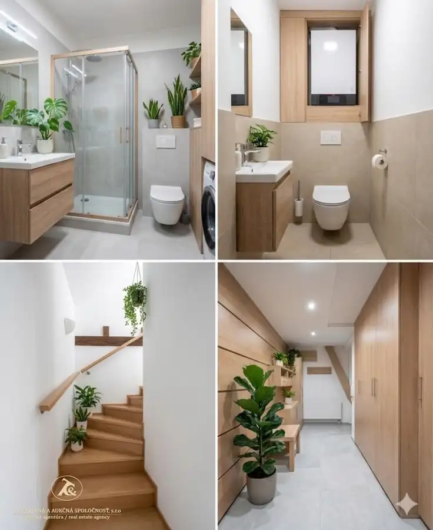
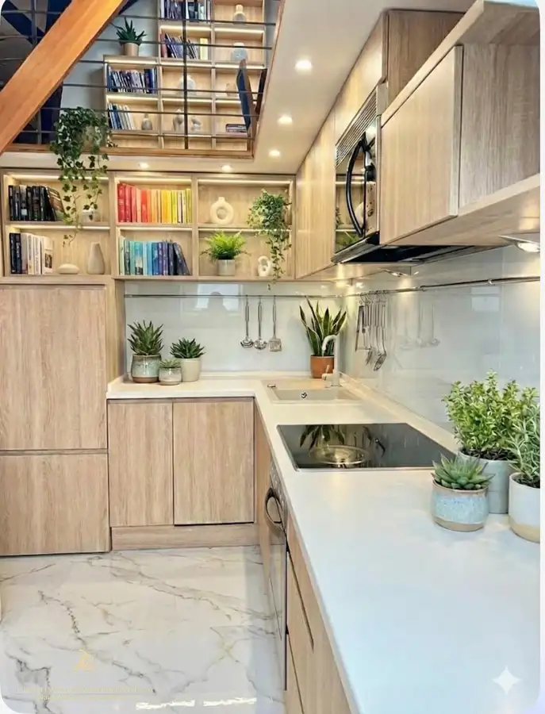
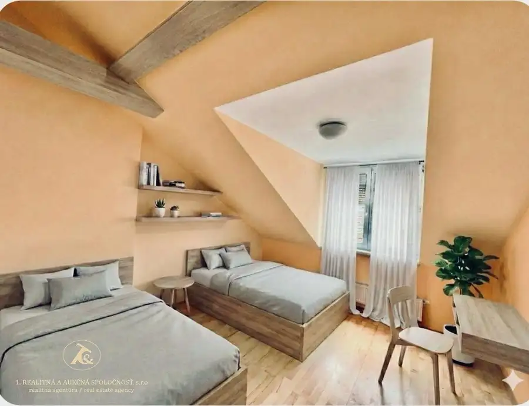
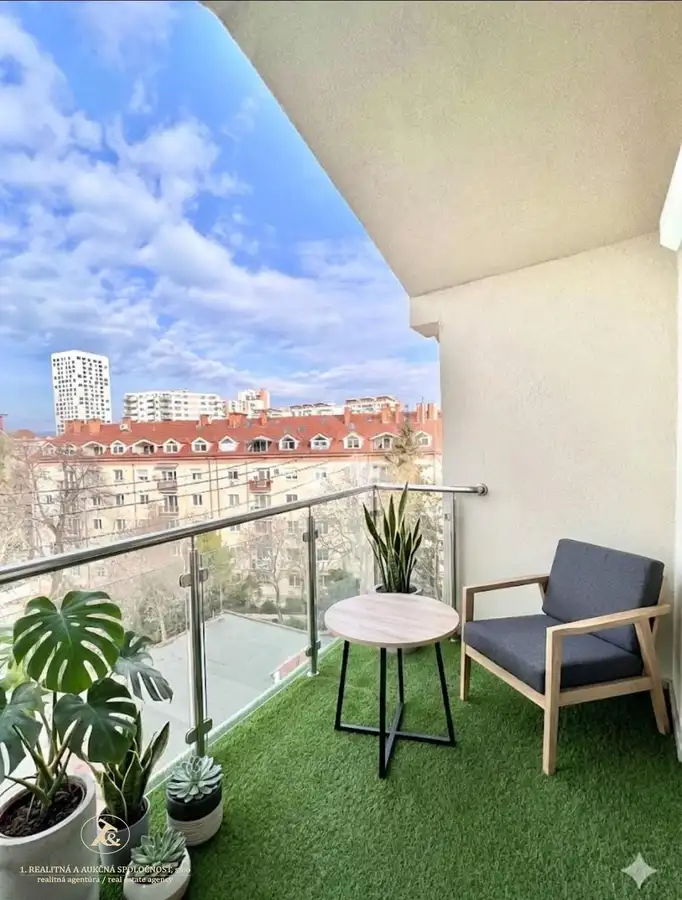

Veľkorysý byt vhodný pre rodinu aj prácu z domu
Staré Mesto, Bratislava







- Dispozícia4-izbový
- Plocha125 m²
- Poschodie6.
- StavČiastočná rekonštrukcia
- VlastníctvoOsobné
O nehnuteľnosti
NA PREDAJ: Ponúkame jedinečný 3-izbový mezonet v žiadanej lokalite m.č. Ružinov, len pár minút od centra mesta. Tento moderný a vzdušný byt poskytuje komfortné bývanie s výbornou dostupnosťou a kompletnou občianskou vybavenosťou len skok do centra mesta. Záhradnícka ulica je výbornou voľbou pre každého, kto chce byť blízko centra, no mimo ruchu historického jadra. Všetko potrebné máte doslova na dosah aj pre využitie ako investícia pre Vaše podnikanie pre Airbnb nakoľko tento byt poskytne komfortné aj krátkodobé bývanianie pre 6 a viac ľudí.Nivy centrum a autobusová stanica (Nivy Mall) – 10 minút pešo: obchody, reštaurácie, coworking, tržnica aj spojenie na letisko.Historické centrum Starého Mesta – cca 15 minút pešo alebo 5 minút električkou.Tehelné pole & Národný futbalový štadión – 10 minút autom alebo MHD.Zimný štadión Ondreja Nepelu – tiež v dostupnosti do 10 minút.V blízkosti: Trhovisko Miletičova, Medická záhrada, trasy MHD, reštaurácie, kaviarne, fitness centrá.Hlavné BENEFITY nehnuteľnosti:Nízke náklady na bývanie vďaka vlastnému vykurovaniu Dve samostatné nepriechodné spálne ideálne pre rodinu alebo spolubývajúcichVeľký otvorený priestor – kuchyňa prepojená s jedálňou a obývacou izbou na spoločné chvílepriestranná chodba klimatizácia pre komfort v letných mesiacochdvalitné okná značky Velux – dostatok prirodzeného svetladrevené podlahy – príjemná atmosféra a vysoká odolnosťdostatok úložného priestoru – dva šatníky + ďalšie úložné riešeniaveľká knižica. Priestranná kúpeľňa so sprchovým kútom, práčkou a sušičkousamostatná toaletaloggia poskytuje ideálne miesto na relaxByt je ideálny pre rodinu, pár alebo ako investícia s výborným potenciálom na prenájom alebo aj moderný pracovný ateliérPARKOVANIE – bezproblémové v okolí, prípadne možnosť dokúpiť garážové státieLOKALITA : napriek centru mesta byt je otočený do vnútrobloku, poskytuje tiché bývanie pokojná ulica, MHD, školy, obchody, kaviarne parky a reštaurácie...ROZLOHA bytu: spodná časť poskytuje 99,65 m2 a vrchná podstrešná časť s pracovňou a oddychovou časťou cca 25 m2CENA: 390 000v cene právny servis sprostredkovanie úveru licencovaným hypotekárnym špecialistom poskytnutie znalcapomoc architektaObhliadky realizujte u makléra, hypo špecialistu zároveň Mgr. Lívia Hološová+421 908769429 mail: livia.holosova@realitna.sk
Parametre
- Cena vrátane energií
- Nie
- Druh
- 4 izbový byt
- Dátum zverejnenia
- 03. 04. 2026
- Energetická náročnosť
- Energeticky úsporný
- Energetický certifikát budovy
- nie je
- Energie
- 160
- Podlažie
- 6
- Počet izieb / miestností
- 3
- Počet lodžií
- 1
- Rok kolaudácie
- 2005
- Rok poslednej rekonštrukcie
- 2019
- Rok výstavby
- 2004
- Stav nehnuteľnosti
- Čiastočná rekonštrukcia
- Telekomunikácie
- Internet, Káblová TV, Optická sieť
- Typ
- Predaj
- Typ konštrukcie
- Tehlová
- Umiestnenie
- Vstavba podkrovia
- Vlastníctvo
- Osobné
- Vybavenie
- Lodžia, Verejné parkovanie, Výťah
- Vykurovanie
- Podlahové, Lokálne, Klimatizacia
- Zariadenie
- Zariadené kompletne
- Úžitková plocha
- 125 m²
Kde to je


Mohlo by Vás zaujímať
 BytNové
257 500 €Atraktívny 2-izbový byt v Ružinove – ideálny na bývanie aj investíciu
Ružinov, Bratislava
2-izbový69 m²2. podlažie
BytNové
257 500 €Atraktívny 2-izbový byt v Ružinove – ideálny na bývanie aj investíciu
Ružinov, Bratislava
2-izbový69 m²2. podlažie
 BytNové
226 000 €Novostavba bytu -Slnečnice mesto - BA -Petržalka
Petržalka, Bratislava
2-izbový60 m²1. podlažie
BytNové
226 000 €Novostavba bytu -Slnečnice mesto - BA -Petržalka
Petržalka, Bratislava
2-izbový60 m²1. podlažie
 BytNové
143 000 €Na PREDAJ - praktické bývanie v Senci | 2-izbová dispozícia + balkón aj kobka
Senec
2-izbový35.46 m²3. podlažie
BytNové
143 000 €Na PREDAJ - praktické bývanie v Senci | 2-izbová dispozícia + balkón aj kobka
Senec
2-izbový35.46 m²3. podlažie